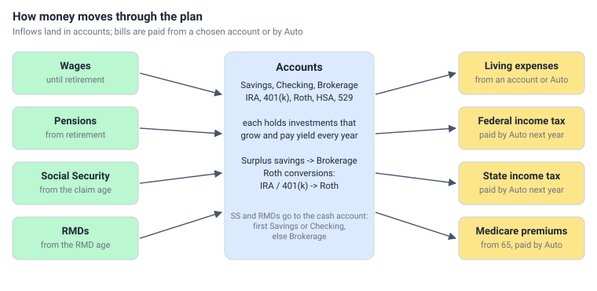
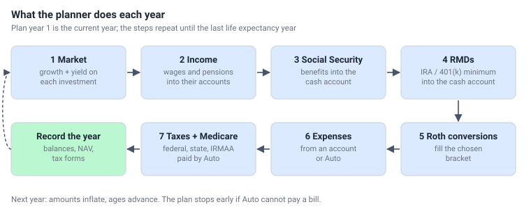
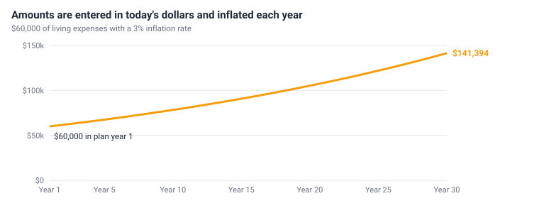

How the plan works
The planner is a year-by-year simulation. It starts with today's balances and steps forward one calendar year at a time, applying the same steps every year, until the last tax payer's life expectancy year.
How money moves

Each year, step by step

- Market. Every investment grows by its growth rate and earns its yield on the balance at the start of the year. Yield is reinvested; in taxable accounts it is taxed that year as interest, dividends or tax-exempt interest. See asset classes.
- Income. Wages are paid until the retirement year and pensions from it, each between its start and end years, into the chosen account. See income and expenses.
- Social Security. From the claim age, each tax payer's benefit is paid into the cash account. See Social Security.
- RMDs. From the RMD start age, each IRA and 401(k) must pay out its required minimum. Expenses that name the account are withdrawn from it in step 5 and count toward the RMD, as the IRS counts them; the rest is paid into the cash account now. Auto spends the cash account first, so the year's bills are paid from the RMD before Auto touches an IRA or 401(k) again. See RMDs.
- Expenses. Each living expense is paid from its account or by Auto. See withdrawals and Auto.
- Taxes and Medicare. Auto pays last year's federal and state income tax and this year's Medicare premiums. A withdrawal that pays a tax bill is income of the year it is made, so it goes on this year's return. See taxes and Medicare.
- Reinvest surplus. Savings and Checking accounts don't pile up money. Whatever one gained this year - unspent RMDs and Social Security, income paid into it, its own growth and yield - moves to the first Brokerage account that holds an investment. Each Savings and Checking account starts next year with the balance it started this year. See surplus savings are reinvested.
- Roth conversions. If the scenario fills a Roth bucket, IRA / 401(k) money is moved to a Roth until taxable income reaches the bucket's limit. This comes last, after every other withdrawal of the year, so the bucket is filled exactly. See Roth conversions.
The planner then closes the year: it works out this year's federal and state tax, to be paid next year, and records account balances, cash flows, income and expenses, net asset value and the tax forms.
Example: one year for Pat
Pat is single and 76, retired at 65 and claimed Social Security at 70. The plan uses the default General Settings and the 2026 tax tables. Pat starts 2026 - plan year 1 - with:
| Pat's plan | Details |
|---|---|
| Savings | $20,000 in cash. This is the cash account. |
| Brokerage | $200,000 stock fund: 6% growth, 2% dividends (cost basis $150,000) |
| IRA | $237,000 bond fund: 1% growth, 4% interest |
| Pension | $24,000 a year, paid into savings |
| Social Security | $2,500 a month, Pat's estimate for a claim at 70 |
| Living expenses | $40,000, paid by Auto |
| Travel | $4,000, paid from the IRA (the IRA is named in the expense's From column) |
Here is what each step does. The last column follows the savings balance.
| Step | What happens in 2026 | Savings |
|---|---|---|
| Start | Balance on January 1 | $20,000.00 |
| 1. Market | The stock fund grows $12,000 and pays $4,000 in dividends, which are reinvested and taxable (line 3a). The IRA earns $11,850 (1% + 4%), not taxed inside the IRA. Cash earns nothing. | $20,000.00 |
| 2. Income | The $24,000 pension is paid into savings. | $44,000.00 |
| 3. Social Security | $2,500 × 12 × 85% (the Social Security adjustment factor) = $25,500, paid into savings. | $69,500.00 |
| 4. RMDs | Pat must take $237,000 (the IRA's balance at the end of last year) / 23.7 = $10,000 from the IRA. The $4,000 trip is paid from the IRA in step 5 and counts toward it, so step 4 takes the other $6,000, into savings. | $75,500.00 |
| 5. Expenses | Auto pays the $40,000 of living expenses from savings, which it uses first. The $4,000 trip comes from the IRA. | $35,500.00 |
| 6. Taxes and Medicare | Auto pays $3,182.50 federal and $1,303.50 state income tax (see the note below) and $2,434.80 of Medicare premiums ($202.90 a month; Pat's income is below the first IRMAA tier). | $28,579.20 |
| 7. Reinvest surplus | Savings gained $8,579.20 since January 1. It moves to the stock fund, and savings are back at their start-of-year balance. | $20,000.00 |
| 8. Roth conversions | None. Pat's RMDs have started, and conversions stop at the RMD age. | $20,000.00 |
Closing the year. Pat's 2026 return:
| Pat's 2026 return | Amount |
|---|---|
| Pension (line 5a) | $24,000.00 |
| IRA distributions (line 4a): $6,000 RMD + $4,000 trip | $10,000.00 |
| Qualified dividends (line 3a) | $4,000.00 |
| Taxable Social Security (line 6b), part of the $25,500 paid | $18,737.50 |
| Total income (line 9) | $56,737.50 |
| Deductions: $16,100 standard + $2,050 age 65 add-on + $6,000 senior deduction | -$24,150.00 |
| Taxable income (line 15) | $32,587.50 |
| Federal tax (line 16) - the dividends fall in the 0% capital gain bracket | $3,182.50 |
| State tax at the 4% placeholder rate | $1,303.50 |
- This year's tax is paid next year. The $3,182.50 and $1,303.50 on the 2026 return are paid in step 6 of 2027.
- Plan year 1 pays an estimate. The plan has no 2025 return, so step 6 of 2026 pays an estimate of 2025's tax: the tax on 2026's income so far. Pat's taxes came from cash and there was no Roth conversion, so the estimate equals the 2026 tax. From 2027 on, step 6 pays the tax worked out when the previous year closed.
- The trip counted toward the RMD. The IRA paid out $10,000 in all. Without the credit it would have paid $14,000 - the full RMD plus the trip - and Pat would have reported $4,000 more IRA income.
- Year-end balances: savings $20,000.00; brokerage $224,579.20 ($200,000 + $12,000 growth + $4,000 dividends + $8,579.20 reinvested); IRA $238,850.00 ($237,000 + $11,850 - $10,000). Net asset value: $483,429.20.
Inflation and today's dollars

All amounts are entered in today's dollars. Plan year 1 uses them as entered; each later year multiplies them by (1 + inflation rate) for every year since plan year 1. Four rates are used:
- each income and expense's own inflation rate (default: the general inflation rate);
- the Social Security COLA rate for Social Security cost-of-living increases;
- the tax forms inflation rate for tax brackets, deductions, Roth buckets and IRMAA thresholds;
- the Medicare premium inflation rate for Medicare premiums.
The general inflation rate itself is only the starting rate given to each new income and expense. Social Security has its own rate because its yearly COLA follows a government price index (CPI-W), not your own costs. New plans use 2.5%, a little below the 3% general rate, so the benefit slowly buys less - a cautious assumption. See Social Security.
Results are shown in the dollars of each year (nominal dollars). To compare a far-future amount with today, divide by the growth from inflation; at 3% a dollar in year 30 buys about what 42 cents buys today.
The plan horizon and how a plan ends
- Plan year 1 is the current calendar year (the start of plan,
SOP). - The plan runs through the last life expectancy year of the tax payers (
YODALL). - A tax payer's wages, pension and own Social Security stop after their life expectancy year. The survivor keeps the larger Social Security benefit and files single from the next year.
- If Auto cannot pay a bill because every account it can use is empty, the plan ends that year. The results show where it stopped: that is the year the money ran out.
Two market scenarios
Every plan can be run in a normal market (each investment earns its own growth and yield, or its asset class's long-run average) or a down and flat market (every investment replays its asset class's real 2000-2026 history, starting at the worst point for your holdings). Run Plan runs every scenario in both. See normal and down markets.
Assumptions and simplifications
The planner keeps the model understandable. Know these limits when you read the results:
- Timing. Each year is calculated as one step. Growth and yield apply to the balance at the start of the year, so money deposited during a year starts growing the next year.
- Deductions. The standard deduction (with the 65+ add-on and the 2025-2028 senior deduction) is always used; itemized deductions and credits are not modeled.
- Capital gains. Sales use average cost, and every gain is treated as long-term. A net capital loss is limited to $3,000 a year, with no carryforward. Gold is taxed like other capital gains (real gold funds can be taxed at up to 28%).
- Penalties. There are no early-withdrawal penalties for IRA or 401(k) money taken before 59½.
- State tax. State tax uses the state brackets on federal taxable income plus tax-exempt interest; state-specific rules (such as exempting Social Security or pensions) are not modeled.
- Tax timing. Each year's tax is paid the following year. The planner has no figures for the year before the plan, so plan year 1 pays its own tax - worked out before its Roth conversion - as the estimate of last year's. The last plan year also pays its own tax, so nothing is left owing; the withdrawal for that final bill is not taxed again.
- Social Security. A survivor receives the deceased's benefit only if the deceased had already claimed it; survivor reductions are not applied. Benefits for a living spouse based on the other's record (spousal benefits) are not modeled - enter the higher of the two in each person's own estimate if that applies to you.
- Roth conversions fill the bucket to its top on total taxable income (line 15), including qualified dividends and capital gains. Their side effects on the senior deduction, Social Security and later Medicare premiums are counted, but the bucket is not lowered to avoid an IRMAA tier.
- No rebalancing. Each investment grows on its own; new money is split by Mix and withdrawals are proportional to balance. The only automatic move is the yearly reinvestment of surplus savings (step 7).